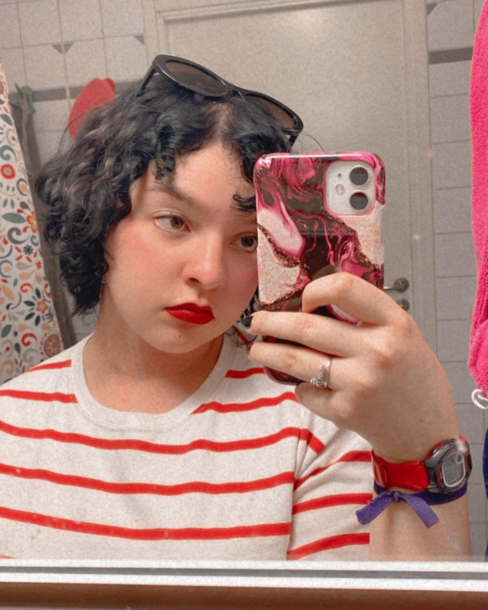

Hello, I am Isabel and I am an NMD student in Jönköping, Sweden. I am studying here because I got accepted and I like this major a lot :).
Some things about me...
- I like coffee and pastries, fika, in other words.
- I am 20 years old.
- I am an aries and my MBTI is INFP :)
- My favorite author is Edgar Allan Poe and my favorite work of him is The Fall of the House of Usher.
- My favorite books are Paper Towns by John Green and The Picture of Dorian Gray by Oscar Wilde.
- My favorite album is El Mal Querer by Rosalía.
- My favorite song is Duvet by Bôa.
- I have a dog, her name is Nikki.